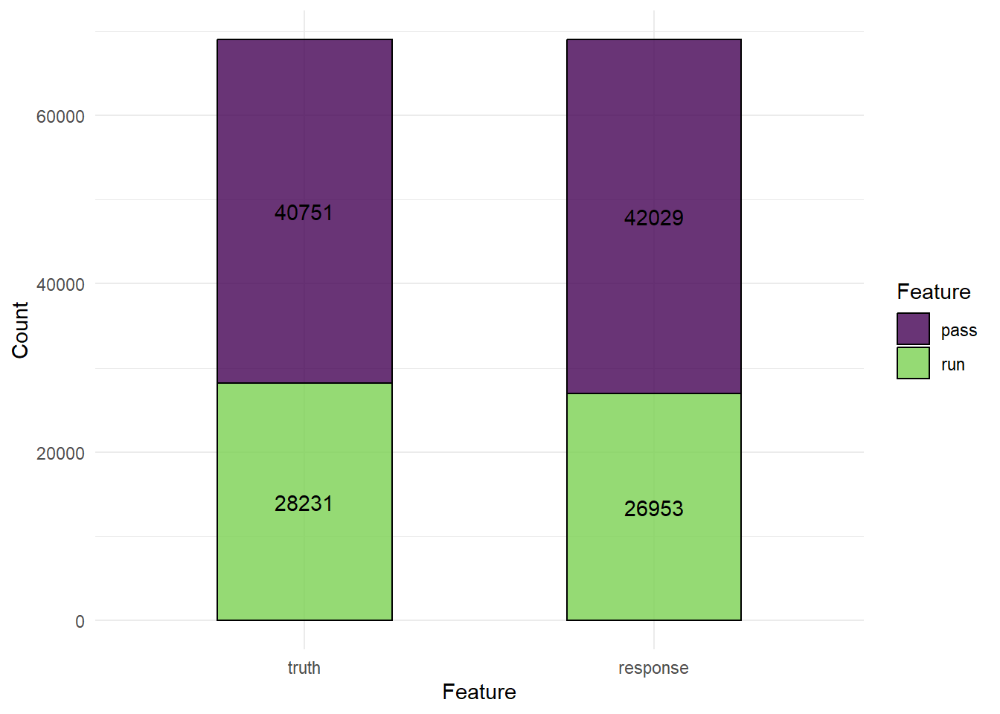
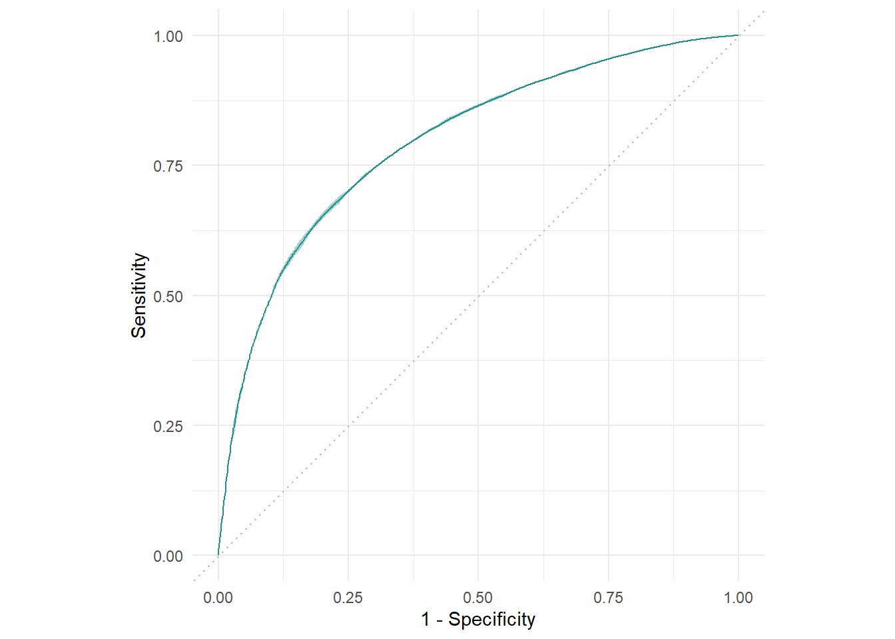
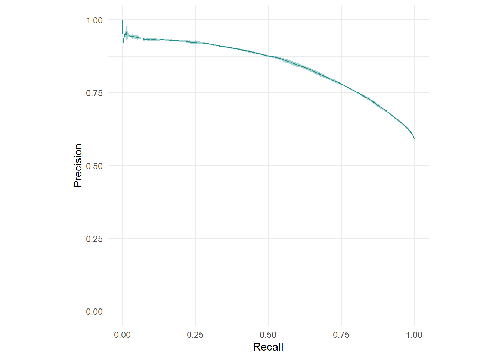
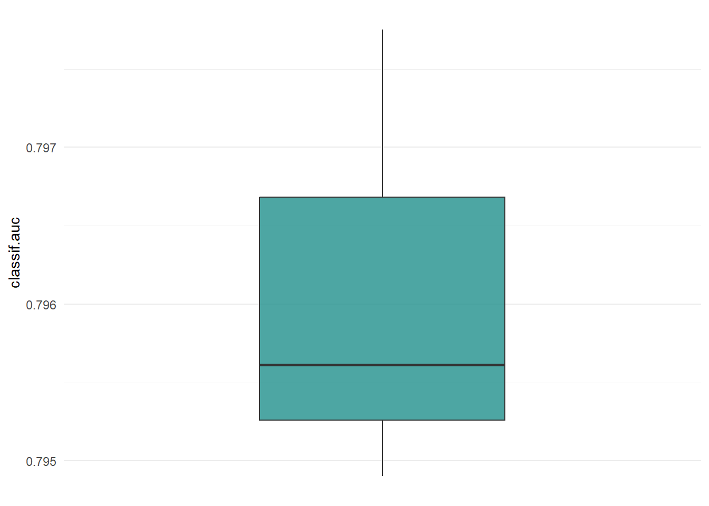
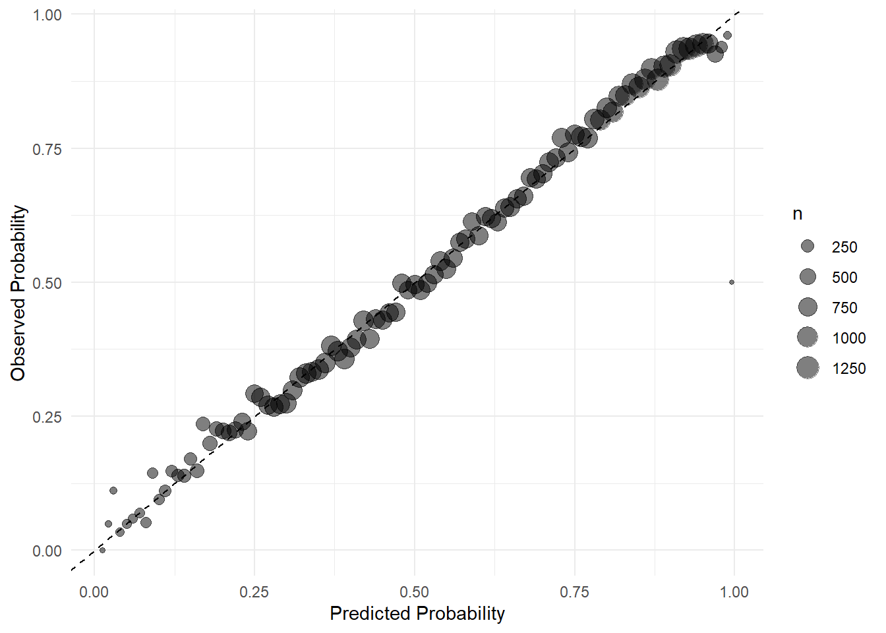
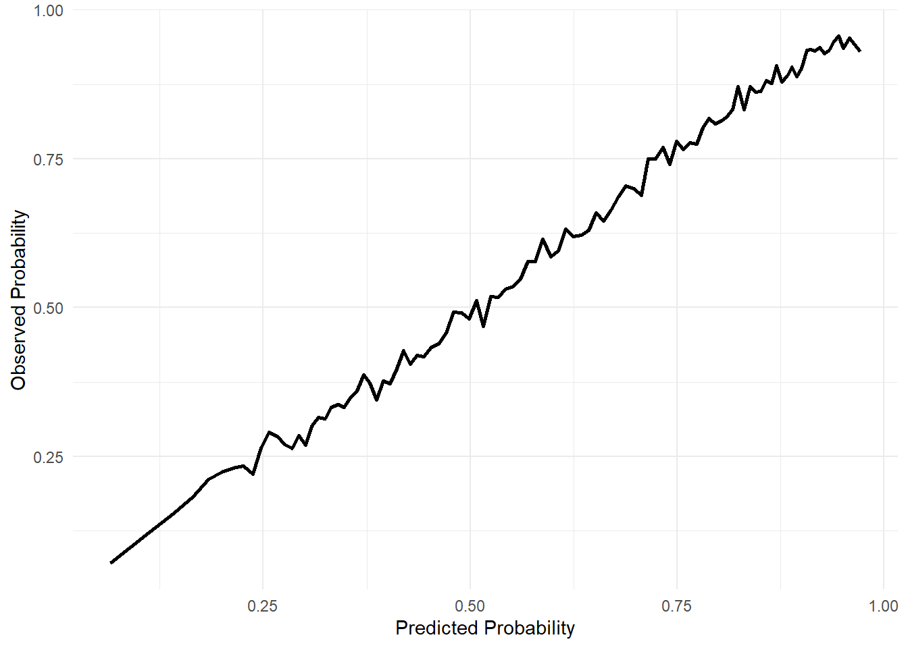
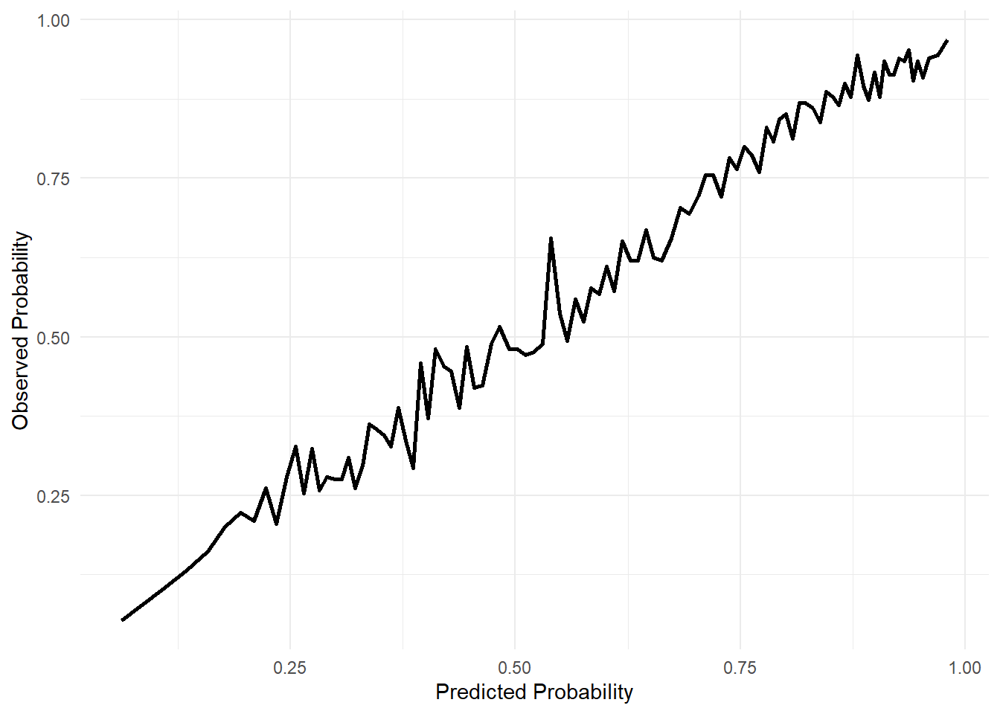
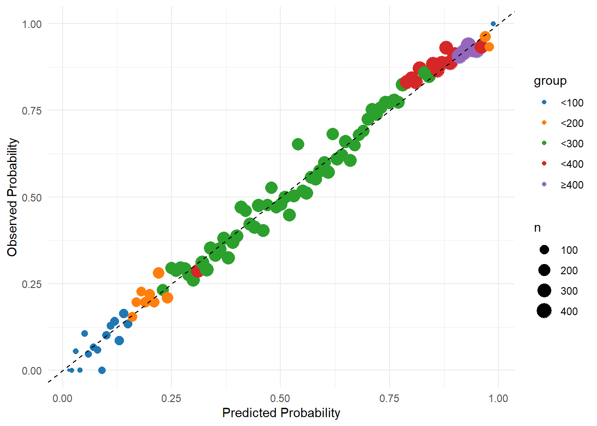

rm(list = ls())
library(mlr3verse)
## Loading required package: mlr3
library(mlr3pipelines)
library(mlr3filters)37 mlr3绘制校准曲线
前面介绍了使用tidymodels画校准曲线，不知道大家学会了没？
众所周知，mlr3目前依然不支持校准曲线的绘制，需要自己提取数据画，大家多去github提issue，加速对校准曲线的支持！
今天介绍mlr3怎么画校准曲线，还是那句话，校准曲线就是散点图，你非说是折线图也行，校准曲线的基础知识请看前面模型评价部分。
关于mlr3的教程，大家可以去我的公众号查看，一共写了十几篇。
37.1 加载R包
首先还是加载数据和R包，和之前的数据一样的。
37.2 建立任务
然后是对数据进行划分训练集和测试集，对数据进行预处理，为了和之前的tidymodels进行比较，这里使用的数据和预处理步骤都是和之前一样的。
# 读取数据
all_plays <- readRDS("./datasets/all_plays.rds")
# 建立任务
pbp_task <- as_task_classif(all_plays, target="play_type")
# 数据划分
split_task <- partition(pbp_task, ratio=0.75)
task_train <- pbp_task$clone()$filter(split_task$train)
task_test <- pbp_task$clone()$filter(split_task$test)37.3 数据预处理
建立任务后就是建立数据预处理步骤，这里采用和上篇推文tidymodels中一样的预处理步骤：
# 数据预处理
pbp_prep <- po("select", # 去掉3列
selector = selector_invert(
selector_name(c("half_seconds_remaining","yards_gained","game_id")))
) %>>%
po("colapply", # 把这两列变成因子类型
affect_columns = selector_name(c("posteam","defteam")),
applicator = as.factor) %>>%
po("filter", # 去除高度相关的列
filter = mlr3filters::flt("find_correlation"), filter.cutoff=0.3) %>>%
po("scale", scale = F) %>>% # 中心化
po("removeconstants") # 去掉零方差变量37.4 建立模型
先选择随机森林模型。
rf_glr <- as_learner(pbp_prep %>>% lrn("classif.ranger", predict_type="prob"))
rf_glr$id <- "randomForest"很多人喜欢在训练集中使用10折交叉验证，但其实这对于提高模型表现没什么用尤其是临床预测模型这个领域因为你的模型表现好不好很大程度上取决于你的数据好不好！鸭子是不会变成天鹅的，这一点可以看附录。
# 加速
library(future)
plan("multisession",workers=12)
# 为了加快速度，用个3折交叉验证
rr <- resample(task = task_train,
learner = rf_glr,
resampling = rsmp("cv",folds = 3),
store_models = T
)
## INFO [20:44:17.522] [mlr3] Applying learner 'randomForest' on task 'all_plays' (iter 1/3)
## INFO [20:44:17.868] [mlr3] Applying learner 'randomForest' on task 'all_plays' (iter 2/3)
## INFO [20:44:18.212] [mlr3] Applying learner 'randomForest' on task 'all_plays' (iter 3/3)37.5 评价模型
先看看在训练集中的表现。
混淆矩阵：
rr$prediction()$confusion
## truth
## response pass run
## pass 32043 10055
## run 8708 18176混淆矩阵可视化：
autoplot(rr$prediction())
查看其他结果：
rr$aggregate(msrs(c("classif.auc","classif.acc","classif.bbrier")))
## classif.auc classif.acc classif.bbrier
## 0.7960892 0.7280015 0.1798211喜闻乐见ROC曲线：
autoplot(rr,type = "roc")
喜闻乐见的prc曲线：
autoplot(rr, type = "prc")
箱线图：
autoplot(rr, measure = msr("classif.auc"))
以上所有介绍的图形和评价方法都在之前的推文详细介绍过了~不会的赶紧翻看。
37.6 训练集的校准曲线
先画训练集的校准曲线，毫无难度，看不懂的可以加群一起讨论~
prediction <- as.data.table(rr$prediction())
head(prediction)
## row_ids truth response prob.pass prob.run
## 1: 8 pass run 0.2116344 0.7883656
## 2: 14 pass pass 0.8305389 0.1694611
## 3: 29 run pass 0.6949074 0.3050926
## 4: 32 run run 0.2503858 0.7496142
## 5: 37 run pass 0.6836322 0.3163678
## 6: 42 pass pass 0.5705558 0.4294442方法1：
suppressPackageStartupMessages(library(tidyverse))
library(ggsci)
calibration_df <- prediction %>%
mutate(pass = if_else(truth == "pass", 1, 0),
pred_rnd = round(prob.pass, 2)
) %>%
group_by(pred_rnd) %>%
dplyr::summarize(mean_pred = mean(prob.pass),
mean_obs = mean(pass),
n = n()
)
ggplot(calibration_df, aes(mean_pred, mean_obs))+
geom_point(aes(size = n), alpha = 0.5)+
scale_color_lancet()+
geom_abline(linetype = "dashed")+
labs(x="Predicted Probability", y= "Observed Probability")+
theme_minimal()
第2种方法，大家比较喜欢的折线图！
cali_df <- prediction %>%
arrange(prob.pass) %>%
mutate(pass = if_else(truth == "pass", 1, 0),
group = c(rep(1:100,each=680), rep(101,982))
) %>%
group_by(group) %>%
dplyr::summarise(mean_pred = mean(prob.pass),
mean_obs = mean(pass)
)
ggplot(cali_df, aes(mean_pred, mean_obs))+
geom_line(linewidth=1)+
labs(x="Predicted Probability", y= "Observed Probability")+
theme_minimal()
是不是和上一篇中的tidymodels画出来的一模一样？没错，就是一样的，就是这么简单，想怎么画就怎么画 ！
37.7 测试集的校准曲线
先把模型用在测试集上，得到预测结果，然后画图！
cv_pred <- rf_glr$train(task_train)$predict(task_test)
cv_pred_df <- as.data.table(cv_pred)
head(cv_pred_df)
## row_ids truth response prob.pass prob.run
## 1: 3 run pass 0.7906472 0.20935277
## 2: 4 run pass 0.6911209 0.30887909
## 3: 6 run run 0.4308536 0.56914641
## 4: 7 pass pass 0.8317469 0.16825305
## 5: 13 run pass 0.9383892 0.06161080
## 6: 16 pass pass 0.9243608 0.07563917先画个喜闻乐见的校准曲线：
cali_df <- cv_pred_df %>%
arrange(prob.pass) %>%
mutate(pass = if_else(truth == "pass", 1, 0),
group = c(rep(1:100,each=229), rep(101,94))
) %>%
group_by(group) %>%
dplyr::summarise(mean_pred = mean(prob.pass),
mean_obs = mean(pass)
)
ggplot(cali_df, aes(mean_pred, mean_obs))+
geom_line(linewidth=1)+
labs(x="Predicted Probability", y= "Observed Probability")+
theme_minimal()
另一种颜值高点的校准曲线，给你点颜色瞧瞧！
calibration_df <- cv_pred_df %>%
mutate(pass = if_else(truth == "pass", 1, 0),
pred_rnd = round(prob.pass, 2)
) %>%
group_by(pred_rnd) %>%
dplyr::summarize(mean_pred = mean(prob.pass),
mean_obs = mean(pass),
n = n()
) %>%
mutate(group = case_when(n < 100 ~ "<100",
n < 200 ~ "<200",
n < 300 ~ "<300",
n < 400 ~ "<400",
TRUE ~ "≥400"
))
ggplot(calibration_df, aes(mean_pred, mean_obs))+
geom_point(aes(size = n, color = group))+
scale_color_d3()+
geom_abline(linetype = "dashed")+
labs(x="Predicted Probability", y= "Observed Probability")+
theme_minimal()
配色略诡异…
校准曲线，你学会了吗？
我知道并没有，比如，多条画一起怎么搞？生存资料的怎么搞？